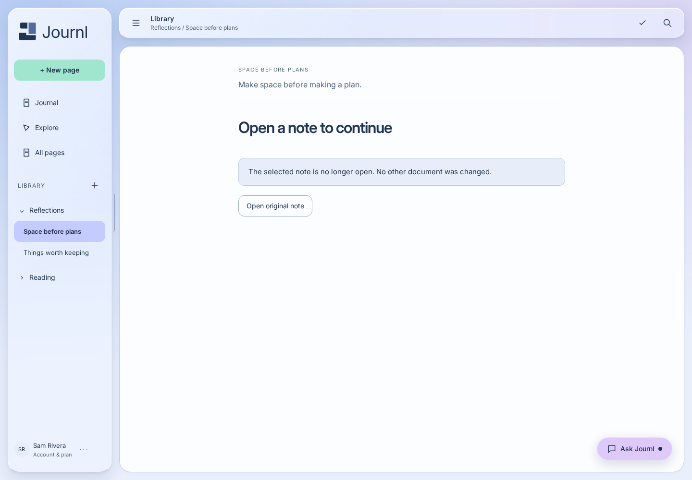

Editor
Approved screens and states. Open a PNG for full resolution. Component reference plates supplement contextual screens; do not implement them as routes.
Open a note to continue
ai-review-no-target · /pages/[id] · Open a note to continue
Actions and implementation references
+ New page · Journal · Explore · All pages · ⌄ · Reflections · › · Reading · Open original note · Ask Journl · Today’s Journal · Close · Instant · Thinking
docs/editor-inventory/README.mdapps/web/src/ai/tools/write/client.tsapps/web/src/ai/tools/apply-changes/client.tsapps/web/src/ai/tools/reject-changes/client.ts

Visual-system CSS reference


Visual-system CSS reference

Visual-system CSS reference

Visual-system CSS reference